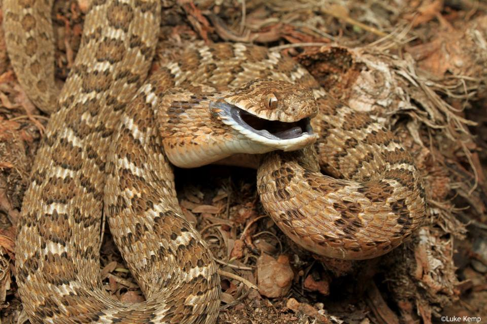

Maritz Lab
 If you are interested in joining the lab, please email us your CV, as well as a short note briefly describing the kind of research you would be interested in performing, as well as how that research would fit into the broader aims of the lab.
I know you don't have money for this right now. Perhaps say looking for a postdoc. Would be willing to sponsor an applications to NSF,NRF, Fulbright?
Say something about what it means to complete a Masters and PhD degree and why one might complete the degree. Discuss any available funds
Say something about what it means to complete a honours degree and why one might complete the degree. Discuss any available funds
1. Project one
project description
2. Project two
project description
3. Project three
project description